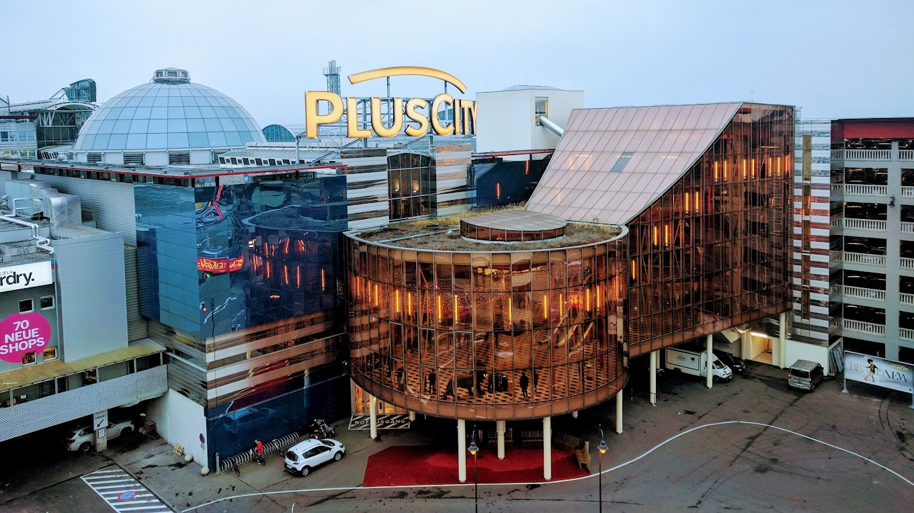
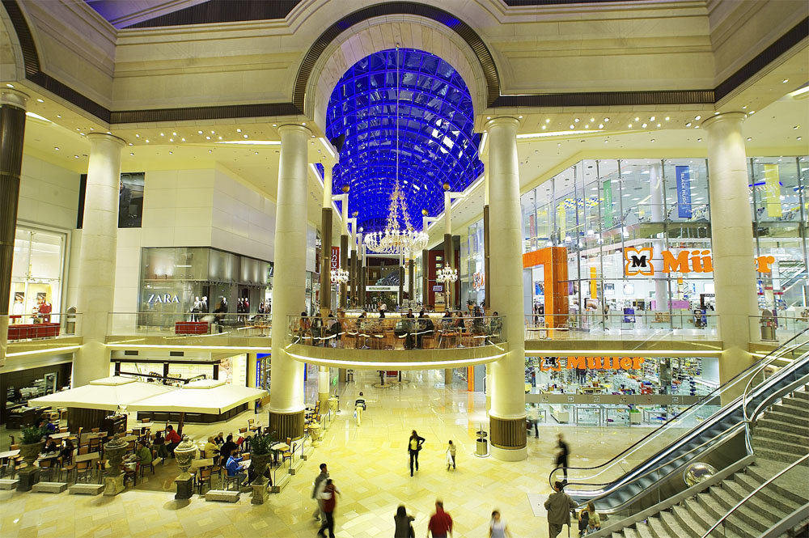
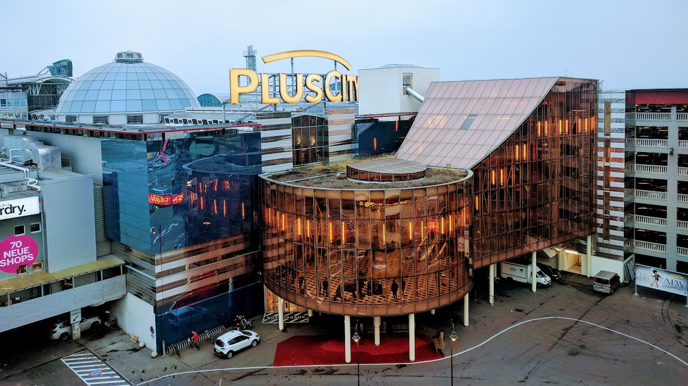
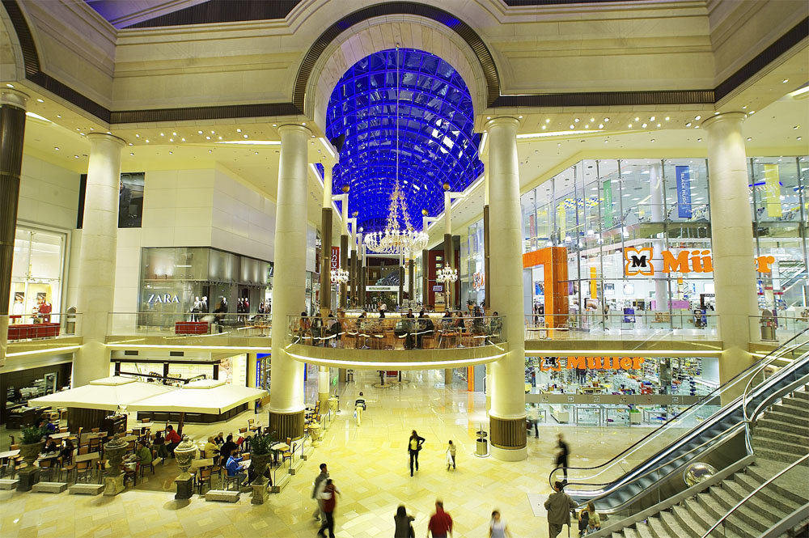

Über das Projekt
Das Projekt ToDoLinz hat das Ziel, die Stadt Linz als herausragendes Ziel für Gastronomie und Tourismus zu positionieren. Eine ansprechende Webseite soll den Nutzern die besten gastronomischen und touristischen Angebote in Linz präsentieren.
- Breite Zielgruppe: Einheimische, Touristen und Geschäftsreisende
- Linz national und international bekannt machen
- Lokale Wirtschaft durch Förderung touristischer Angebote stärken
- Benutzerfreundlichkeit und visuelle Attraktivität der Webseite
Beliebte Locations in Linz
 



Plus City
Ein Shopping-Paradies mit über 150 Shops, Restaurants und Freizeitangeboten.
Pichlinger See
Ein Naturparadies für Entspannung und Wassersport.
Strandbar Linz
Sommerfeeling direkt an der Donau mit Drinks, Musik und Events.
Urfahranermarkt
Ein traditioneller Markt mit Fahrgeschäften, kulinarischen Highlights und Unterhaltung.